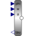
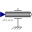
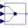
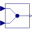
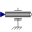
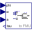
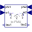

AngleToTorqueAdaptorSignal adaptor for a Rotational flange with torque as output and angle, speed, and optionally acceleration as inputs (especially useful for FMUs) |

|
Diagram
{kind=link}
Information
This information is part of the Modelica Standard Library maintained by the Modelica Association.
Adaptor between a flange connector and a signal representation of the flange. This component is used to provide a pure signal interface around a Rotational model and export this model in form of an input/output block, especially as FMU (Functional Mock-up Unit). Examples of the usage of this adaptor are provided in Rotational.Examples.GenerationOfFMUs. This adaptor has angle, angular velocity and angular acceleration as input signals and torque as output signal. Note, the input signals must be consistent to each other (w=der(phi), a=der(w)).
Parameters (2)
| use_w |
Value: true Type: Boolean Description: = true, enable the input connector w (angular velocity) |
|---|---|
| use_a |
Value: true Type: Boolean Description: = true, enable the input connector a (angular acceleration) |
Connectors (5)
| flange |
Type: Flange_b |
|
|---|---|---|
| phi |
Type: RealInput Description: Angle to drive the flange |
|
| w |
Type: RealInput Description: Speed to drive the flange (w=der(phi) required) |
|
| a |
Type: RealInput Description: Angular acceleration to drive the flange (a = der(w) required) |
|
| tau |
Type: RealOutput Description: Torque needed to drive the flange according to phi, w, a |
Components (6)
|  | move |
Type: Move |
|---|---|---|
|  | multiplex3 |
Type: Multiplex3 |
| torqueSensor |
Type: TorqueSensor |
|
|  | multiplex2 |
Type: Multiplex2 |
| move_phi |
Type: Move_phi |
|
|  | move_w |
Type: Move_w |
Used in Components (3)
|  |
Modelica.Mechanics.Rotational.Examples.Utilities Input/output block of an inverse inertia model |
|  |
Modelica.Mechanics.Rotational.Examples.Utilities Input/output block of a spring/damper model |
|
Modelica.Mechanics.Rotational.Examples.Utilities Input/output block of a spring model |